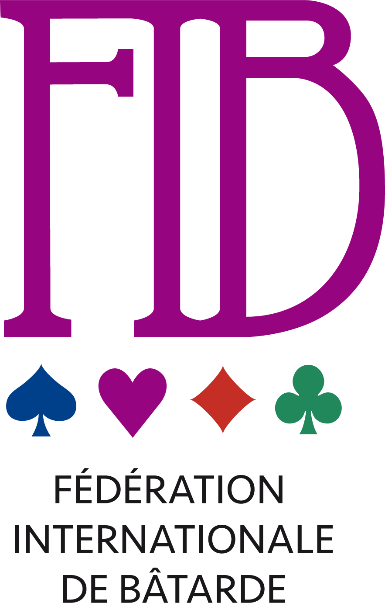
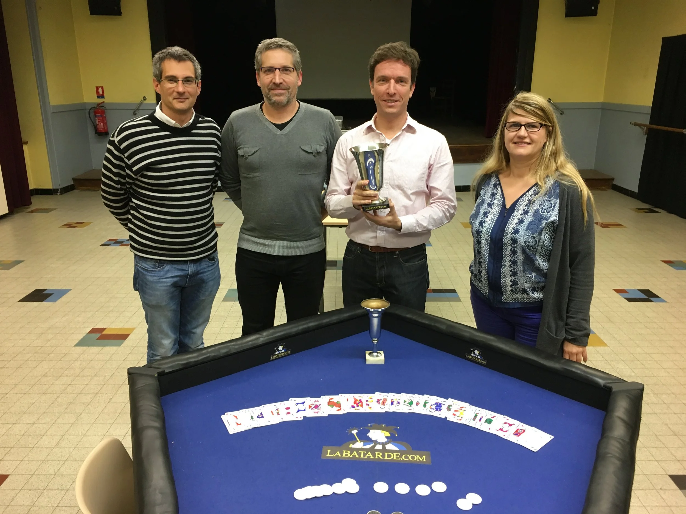

Palmarès
Coupe du monde
Coupe du monde 2022 jouée le samedi 15 novembre 2022 — Champion du monde Paul-Alexandre Naud
La Coupe du Monde 2022 a réuni les meilleurs joueurs de Bâtarde de la planète ! Sur les sept champions du monde, cinq étaient présents, il ne manquait que Sylvain Mongenet retenu en Espagne et Nicolas Spiess, forfait au dernier moment à cause du Covid. Une cinquantaine de personnes étaient réunies à la Croix-Rousse, dans la salle qui a déjà accueilli les deux précédentes éditions. 40 joueurs répartis sur 10 tables ont disputé 3 parties de classement, accumulant des points, dans le but d’être classés parmi les huit premiers et d’accéder ainsi aux demi-finales.
La première demi-finale voit s’affronter Pierre-Henri, Antoine,
Basile et Arthur, tandis que la seconde réunit Noémie, Marc,
Paul-Alexandre et Julien. Seules les deux premières places
permettent d’accéder à la table finale.
C’est Basile qui remporte sa demi-finale et qui se qualifie en
premier, accompagné d’Arthur qui finit deuxième. Dans l’autre, c’est
Marc qui l’emporte et qui se qualifie avec Paul-Alexandre. Julien
Grange, dernier champion du monde encore en lice est donc éliminé et
il faut aussi noter l’élimination de la jeune Noémie qui réalise la
meilleure performance féminine de la soirée, privée de finale par un
coup du sort en toute fin de partie et qui a, par ailleurs, réussi
une partie parfaite à 0 point lors des matchs de classement, en
début de soirée.
La table finale voit donc s’affronter Basile, Paul-Alexandre, Marc et Arthur Marconnier qui avait aussi joué la table finale du Grand Prix de Lyon en 2015.
Et le nouveau Champion du Monde est ….. Paul-Alexandre Naud ! Marc est Vice-Champion du Monde, Basile et Arthur finissent troisièmes ex-aequo. Ils remportent tous un des nouveaux tapis pourpres, une plaque de Champion et de Vice-Champion du Monde pour les deux premiers et une planche encadrée sous-verre pour le grand gagnant.
Coupe du monde 2019 jouée le samedi 30 novembre 2019 — Champion du Monde Jean-Louis Champseix
Belle Coupe du Monde 2019 ! Il y avait 56 joueurs au premier tour, soit 14 tables de 4. Tous les champions du monde étaient là, espérant faire le premier doublé de l'histoire (mis à part votre serviteur qui arbitrait les parties). Julien Grange est le premier Champion du Monde à être éliminé, sorti dès le premier tour, en même temps que les 27 autres joueurs n'ayant pas réussi à finir premier ou deuxième de leur table. Ce qui ne les empêchera pas de continuer à jouer à la Bâtarde toute la soirée en parties amicales.
Au tour suivant c'est Mathieu Bréauté et Nicolas Spiess qui sont éliminés. Seul le champion du monde en titre (à ce moment-là), Guillaume d'Arcy arrivera à se hisser jusqu'au quart de finale avant de se faire sortir. A noter, en quart de finale, la performance de Rémi Grattarola qui fait une partie parfaite à 0 point. En demi-finale c'est l'élimination d'Antoine et Camille Renaud qui réalisent un joli résultat en couple, Camille étant la joueuse la mieux classée du tournoi. Paul Revenant et Florent Bourgarel atteignent eux aussi ce niveau. La finale voit s'opposer Jules-Eric Clément, Rémi Grattarola, Mathieu Cardona et Jean Louis Champseix. Mathieu Cardona finit 4ème avec 36 points alors qu'il n'avait marqué que 11 points en tout dans les quatre manches précédentes, la fatigue sans doute. Rémi Grattarola finit 3ème avec 20 points Jules-Eric Clément est vice-champion du monde 2019 avec 12 points. Et c'est avec seulement 4 points que Jean-Jean Louis Champseix signe une nette victoire et devient le nouveau champion du monde !

Coupe du monde 2016 jouée le vendredi 11 novembre 2016 – Champion du Monde: Guillaume d'Arcy
Voici les quatre finalistes de l’édition 2016, de gauche à droite:
Antoine qui finit à la quatrième place après avoir réalisé l'exploit lors de sa demi-finale de finir la partie avec le score parfait de 0 face à Ericka, Pierre-Louis et Vrginie.
Mathieu, Champion du Monde 2001, qui finit second et qui passe donc de peu à côté d'un doublé historique.
Guillaume, le nouveau Champion du Monde, qui signe une victoire claire et nette!
Cécile est médaillée de bronze, à la troisième place, et ne sera pas la première femme à remporter ce championnat, du moins pas cette année.
Coupe du monde 2013 la coupe du monde 2013 n'a pas été jouée à cause du scandale financier qui a éclaboussé la FIB lors de l'attribution de cette coupe du monde au Quatar. Néanmoins la FIB a décidé que cette coupe du monde serait décernée à titre honorifique à Sylvain Mongenet.
Coupe du monde 2010 jouée le 4 septembre 2010 – Champion du Monde: Julien Grange
Coupe du monde 2007 jouée le 6 juillet 2007 – Champion du Monde: Jules Marconnier
Coupe du monde 2004 jouée le 27 novembre 2004 – Champion du Monde: Nicolas Spiess
Coupe du monde 2001 jouée le 10 février 2001 – Champion du Monde: Mathieu Bréauté
Grand Prix
Grand prix de Lyon 2015
Regardez la vidéo pour découvrir qui a remporté cette compétition! Ingrid Gautier, Franck Pitiot, Arthur Marconnier et Julien Grange étaient qualifiés pour jouer la table finale.